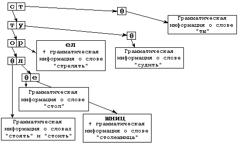

LIBMORPH API
Модули libmorph* используют единые программные интерфейсы – multibyte IMlmaMb
с поддержкой различных кодовых страниц (1251, koi8, 866, Mac, utf-8) и widechar IMlmaWc
с кодировкой UTF-16.
Выбор кодовой страницы для работы модуля выполняется в момент запроса интерфейса передачей строки-идентификатора.
Интерфейсы декларированы в форме, обеспечивающей доступность из приложений на языке C. Однако для простоты восприятия здесь они приведены как классы C++.
Устройство словаря
Модель описания словоизменения
Радиксное дерево
Сканирование словаря
Программный интерфейс
Структуры данных
Грамматика словоформы
Найденная лексема
Интерфейс находок по шаблону
IMlmaMb и IMlmaWc
Функции
Проверка правописания
Лемматизация
Построение формы слова
Построение форм возможных лексем
Информация о лексеме
Поиск по шаблону
CXX-расширение
Модули для python
Константы
Структуры данных
Устройство словаря
Модель описания словоизменения
Для описания словоизменения слово, точнее, его нормальная форма, представленная в словнике, разбивается на три фрагмента:
- псевдооснова - неизменяемая графическая последовательность;
- чередующаяся часть основы;
- окончание.
Окончание при генерации словаря отщепляется автоматически в соответствии с грамматической информацией, содержащейся в таблице окончаний, приписанной данному слову. В случае, если в основе слова есть чередования, то определяется, какой фрагмент чередуется с каким (подбирается таблица чередований в основе), а от основы отщепляется фрагмент чередования, соответствующий нормальной форме слова.
В перечисленных ниже примерах чередующийся фрагмент основы выделен жирным шрифтом, а окончание - косым:
- кош-к-а - кош-ек
- кноп-к-а - кноп-ок
- ос-ел - ос-л-а
- л-ед - л-ьд-а
- в-обр-ать - в-бер-у
Для каждого слова после отщепления всех изменяемых частей в словарь заносится часть речи, ссылка на таблицу чередований в основе (если есть) и ссылка на таблицу окончаний. При работе анализатора нужная ступень чередования выбирается по жестким формальным правилам, которые в этом документе не приводятся.
Радискное дерево

Словарь представляет собою дерево, в каждом узле которого находится таблица, ставящая в соответствие каждому символу смещение аналогичной таблицы следующего уровня. А результате поис строки сводится к нескольким побайтовым сравнениям в памяти – это основное достоинство префиксного дерева, позволяющее получать производительность хэш-таблиц при сохранении возможности лексикографической итерации. Радиксное дерево делает ещё шаг в сторону компактизации словаря, схлопывая узлы с единственной исходящей веткой вр фрагмент строки.
Пусть словарь содержит лишь слова "стол", "столешница", "стоять", "стоить", "стрелять", "судить" и "ты". Тогда, после отщепления всех изменчивых фрагментов, мы получим (в порядке следования) графические псевдоосновы "стол", "столешниц", "сто", "сто", "стрел", "су" и "т". Дерево, строящееся из них, можно представить следующим образом:
Под "грамматической информацией" следует понимать в данном случае часть речи, ссылку на таблицу чередований в основе, ссылку на таблицу окончаний и список чередующихся приставок.
Сканирование словаря
При сканировании устроенного таким образом словаря фактически идет перебор элементов таблицы очередного уровня (0 - для первой буквы слова, 1 - для второй и т. д). Рассмотрим этот процесс на примере изображенного выше мини-словарика.
Пусть на обработку поступило слово "суд". Находясь в корне дерева, мы можем утверждать, что если такое слово в словаре есть, то оно находится на ветви, начинающейся от буквы "с".
Переходим на второй уровень. Теперь текущая буква слова – "у". Допустимые буквы после "с" в нашем примере – "т" и "у". Если искомое слово в словаре есть, оно лежит на ветви дерева, на которую ссылается буква "у".
На третьем уровне таблица пуста, что означает, что возможно лишь отождествление по окончаниям. Понятно, что на таблице чередований "д/ж/ж" (судить - сужу - суженный) и таблице окончаний глагола "су-д-ить" слово "суд" отождествиться не может.
Программный интерфейс
Структуры данных
Грамматика словоформы
struct SGramInfo
{
unsigned char wInfo;
unsigned char iForm;
unsigned short gInfo;
unsigned char other;
};
struct SGramInfo { unsigned char wInfo; unsigned char iForm; unsigned short gInfo; unsigned char other; };
Для полного грамматического описания формы слова используется структура SGramInfo, в которой:
wInfo– техническая часть речи;gInfo– грамматическое описание;iForm– идентификатор формы слова, соответствующий грамматике для данной части речи;other– дополнительные признаки одушевленности (0x01) и неодушевленности (0x02).
Найденная лексема
struct SLemmInfoA { lexeme_t nlexid; const char* plemma; SGramInfo* pgrams; unsigned ngrams; } SLemmInfoA; struct SLemmInfoW { lexeme_t nlexid; const widechar* plemma; SGramInfo* pgrams; unsigned ngrams; };
Две структуры описывают отождествления одной лексемы при лемматизации, однако первая из них используется в multibyte-, а вторая - в unicode-интерфейсе при вызове функции лемматизации. В этих структурах:
nlexid- уникальный идентификатор лексемы;plemma- словарная форма или NULL, если построение словарных форм не требуется;pgrams- грамматические описания отождествлений или NULL, если не требуются;ngrams- количество грамматических описаний.
Интерфейс находок по шаблону
struct SStrMatch { union { const char* sz; const widechar* ws; }; size_t cc; formid_t id; }; struct IMlmaMatch { int Attach(); int Detach(); int AddLexeme( lexeme_t nlexid, int nforms, const SStrMatch* pforms ); };
При поиске в словаре по шаблону для каждой лексемы, с формами которой обнаружено совпадение,
анализатор вызывает предоставленный пользователем метод AddLexeme. Это callback,
оформленный в виде активного интерфейса со средствами контроля времени жизни. Начиная взаимодействие
с ним, анализатор вызывает метод Attach(), а завершив – Detach(),
что позволяет использовать интерфейс асинхронно.
Addlexeme( ... ) получает уникальный идентификатор лексемы nlexid,
количество форм этой лексемы nforms, с которыми произошло отождествление шаблона, и массив
структур SStrMatch, описывающих каждое из совпадений строкой словоформы (mb или wc) её длиной
и идентификатором формы слова.
IMlmaMb и IMlmaWc
struct IMlma[Mb|Wc]
{
int Attach();
int Detach();
int CheckWord( ... );
int Lemmatize( ... );
int BuildForm( ... );
int FindForms( ... );
int GetWdInfo( ... );
int FindMatch( ... );
};Два похожих интерфейса с одинаковым набором функций, отличающиеся лишь типом строковых параметров: первый работает с multibyte-строками (const char*), второй – с UTF-16 (const widechar*)
Функции
Проверка правописания
int CheckWord( pszstr, cchstr, dwsets );
Функция выполняет проверку правописания слова по словарю и возвращает
- 1, если слово опознано;
- 0, если слово не опознано;
- значение меньше нуля в случае ошибки (коды ошибок см. выше).
Аргументы:
pszstr- указатель на строку, которую требуется проанализировать;cchstr- длина строки в символах или (unsigned)-1, если строка заканчивается нулевым символом;dwsets- настройки морфологического анализатора (см. выше).
Лемматизация
int Lemmatize( pszstr, cchstr, plexid, clexid, plemma, clemma, pgrams, ngrams, dwsets );
Функция выполняет отождествление поданной строки по морфологическому словарю и возвращает
- количество лексем, с формами которых произошло отождествление;
- 0, если слово не опознано;
- значение меньше нуля в случае ошибки (см. коды ошибок).
Аргументы:
pszstr- указатель на строку, которую требуется проанализировать;cchstr- длина строки в символах или (unsigned)-1, если строка заканчивается нулевым символом;plexid- указатель на массив для структурSLemmInfo;clexid- размерность этого массива;plemma- указатель на массив для словарных формы слов или NULL, если не требуется;clemma- размерность этого массива;pgrams- указатель на массив для грамматических описаний отождествлений или NULL, если не требуются;cgrams- размерность этого массива;dwsets- настройки морфологического анализатора.
Построение формы слова
int BuildForm( output, cchout, nlexid, idform );
Функция выполняет построение указанной формы слова для заданной лексемы, восстанавливает графические варианты начертания этой формы в выходной массив, разделяя их нулевым символом, и возвращает
- количество построенных вариантов начертания формы слова;
- 0, если слово не опознано;
- значение меньше нуля в случае ошибки (коды ошибок см. выше).
Аргументы:
output- указатель на массив для построенных вариантов формы слова;cchout- размерность этого массива;nlexid- идентификатор лексемы;idform- идентификатор формы слова.
Построение форм возможных лексем
int FindForms( output, cchout, pszstr, cchstr, idform );
Функция выполняет построение указанной формы слова для всех лексем, с которыми произойдет отождествление поданной словоформы. Данная функция полезна для использования в системах, которые не сохраняют идентификаторы лексем. Восстанавливает графические варианты начертания формы в выходной массив, разделяя их нулевым символом, и возвращает:
- количество построенных вариантов начертания формы слова;
- 0, если слово не опознано;
- значение меньше нуля в случае ошибки (коды ошибок см. выше).
Аргументы:
output- указатель на массив для построенных вариантов форм слов;cchout- размерность этого массива;pszstr- указатель на строку ключевой словоформы;cchstr- длина строки или (unsigned)-1, если строка заканчивается нулевым символом;idform- идентификатор формы слова.
Информация о лексеме
int GetWdInfo( pwinfo, nlexid );
Функция извлекает техническую часть речи для переданной лексемы и восстанавливает в переменную, на которую указывает первый параметр. Возвращает:
- 1 при успехе;
- 0, если такой лексемы не существует;
- значение меньше нуля в случае ошибки (см. коды ошибок).
Аргументы:
pwinfo- указатель на переменную для получения технической части речи;nlexid- идентификатор лексемы.
Поиск по шаблону
int FindMatch( pienum, pszstr, cchstr );
Функция выполняет поиск всех возможных форм всех словарных лексем, которые соответствуют переданному шаблону.
Шаблон может содержать буквы и символы * и ?. * соответствует любому количеству любых символов,
? – одному символу. Найденные лексемы и формы подаются по одной лексеме в переданный интерфейс
IFormsMatch. Вызовы продолжаются до тех пор, пока не будет завершён проход по словарю и пока
функция регистрации pienum->AddLexeme( ... ) не вернёт значение, отличное от 0.
Возвращает:
- 1 при успехе;
- значение меньше нуля в случае ошибки (см. коды ошибок).
Аргументы:
pmatch- указатель на интерфейсIFormsMatch;pszstr- указатель на строку ключевой словоформы;cchstr- длина строки или (unsigned)-1, если строка заканчивается нулевым символом.
CXX-расширение
Для удобства есть ещё синтаксический "сахарок" – интерфейсы IMlmaMbXX и IMlmaWcXX
с теми же функциями, но меньшим количеством аргументов:
struct IMlmaXX: Mlma { ... auto GetWdInfo( lexeme_t ) -> uint8_t; int CheckWord( inword[, dwsets] ); int Lemmatize( inword, lxbuff[, stbuff[, grbuff[, dwsets]]] ); auto Lemmatize( inword[, dwsets] ) -> std::vector; int BuildForm( outbuf, nlexid, formid_t ); auto BuildForm( nlexid, formid_t ) -> std::vector ; int FindForms( outbuf, inword, formid_t[, dwsets] ); auto FindForms( inword, formid_t[, dwsets] ) -> std::vector ; int FindMatch( IMlmaMatch*, inword ); int FindMatch( inword, FMatch ); };
Модули для python
Морфологические модули для python реализованы независимо, однако также используют один и тот же программный интерфейс. Установка:
pip install pyrusmorph pip install pyengmorph
После установки следует получить доступ к интерфейсам модуля. И интерфейсы, и сам модуль являются потокобезопасными, так как вся работа со словарями выполняется в режиме read only, а внутренние данные существуют лишь на стеке в ходе вызова.
import pyrusmorph imorph = pyrusmorph.mlmaruWc() ifuzzy = pyrusmorph.mlfaruWc()
Константы
py*morph.SF_IGNORE_CAPITALS == 0x0002 – константа, отключающая чувствительность вызовов
к регистру переданного слова. Без неё слово киев будет опознано только как форма слова кий,
с ней – ещё и как форма слова Киев; без неё Москва будет опознана, а москва – нет.
Структуры данных
Грамматическое описание
class GramInfo:
bFlags: int
grInfo: int
idForm: int
wdInfo: int
wdInfo & 0x3f – техническая часть речи в младших 7 битах;grInfo – грамматическое описание формы в аддитивном виде;vFlags – флаги одушевлённости-неодушевлённости;idForm – идентификаторо формы слова в интервале [0..255].
Найденная лексема
py*morph.SF_IGNORE_CAPITALS == 0x0002 – константа, отключающая чувствительность вызовов
к регистру переданного слова. Без неё слово киев будет опознано только как форма слова кий,
с ней – ещё и как форма слова Киев; без неё Москва будет опознана, а москва – нет.Грамматическое описание
class GramInfo:
bFlags: int
grInfo: int
idForm: int
wdInfo: int
wdInfo & 0x3f– техническая часть речи в младших 7 битах;grInfo– грамматическое описание формы в аддитивном виде;vFlags– флаги одушевлённости-неодушевлённости;idForm– идентификаторо формы слова в интервале [0..255].
Найденная лексема
Декларируются две структуры для multibyte- и widechar-интерфейса, отличающиеся лишь представлением леммы (словарной формы слова). В первом случае это bytes – последовательность байтов, представляющая слово в некоторой кодировке, во втором – нативная python-строка в utf-16.
class MbLemmInfo:
lexid: int
lemma: bytes
grams: List[GramInfo]
class WcLemmInfo:
lexid: int
lemma: string
grams: List[GramInfo]
lexid– фиксированный номер лексемы из словаря;lemma– строка словарной формы слова в рабочей кодировке модуля илиutf-16;grams– массив грамматических описаний форм.
Выделенная основа
Структура подобна предыдущей, однако описывает формально выделенную вероятностным анализатором основу слова и сопутствующие грамматические характеристики и ограничения.
class MbStemInfo:
fProb: float
lemma: bytes
lStem: int
clsId: int
grams: List[GramInfo]
class WcStemInfo:
fProb: float
lemma: string
lStem: int
clsId: int
grams: List[GramInfo]
fProb– мера достоверности отождествления с моделью словоизменения;lemma– строка предполагаемой словарной формы слова в рабочей кодировке модуля илиutf-16;lStem– длина графической основы слова в символах;clsId– идентификатор присвоенного грамматического класса;grams– массив грамматических описаний форм.
Форма слова с её идентификатором
При извлечении соответствующих шаблону форм сами эти формы передаются функции захвата.
class MbStrMatch:
form: int
text: bytes
class WcStrMatch:
form: int
text: string
form– идентификатор формы слова;text– строка формы слова в рабочей кодировке модуля или utf-16.
Словарный анализатор
Поскольку словарные анализаторы приписывают всем лексемам стабильные численные идентификаторы, последние активно используются и в программном интерфейсе модуля. Мы используем их вместо строк, так как определение лексемы строкой неоднозначно (см. стать, простой, Киев), тогда как численный идентификатор заведомо уникален.
Построение формы слова
formlist = imorph.build_form( nlexid, 5 )
if len(formlist) != 0:
for nextform in formlist:
print(f" {nextform}")
else:
print("формы не найдены!")
Функция строит указанную грамматическую форму лексемы и возвращает список построенных вариантов её начертания. Чаще всего это одна форма, однако, например, для творительного падежа единственного числа существительных женского рода в русском языке существует альтернатива: весной, весною.
Проверка правописания
check = imorph.check_word( str, 0 )
if check != 0:
print("слово есть в словаре")
else:
print("неизвестное слово")
Функция проверяет правописание слова по словарю с учётом переданных настроек и возвращает 0, если слово неизвестное, или 1, если слово было опознано.
Лемматизация
lemmas = morph.lemmatize(str, 0)
if len(lemmas) != 0:
for lemm in lemmas:
print(f" {lemm.lexid:<6d} {lemm.lemma}")
for gram in lemm.grams:
print(f" {partOfSpeech[gram.wdInfo & 0x3f]} {gram.idForm:2d}")
else:
print("unknown word")
Функция ищет в словаре все варианты отождествления поданной строки с формами всех возможных лексем и возвращает список найденных отождествлений XxLemmInfo и их грамматических описаний.
Поиск по шаблону
def print_lexeme_forms(lexeme, formlist):
print(f"{lexeme:<6d}")
for nextform in formlist:
print(f" {nextform.form:<2d} {nextform.text}")
return 0
imorph.find_match(mask, print_lexeme_forms)
Функция выполняет поиск всех возможных форм всех словарных лексем, которые соответствуют переданному шаблону. Шаблон может содержать буквы и символы * и ?. * соответствует любому количеству любых символов, ? – одному символу. Найденные лексемы и формы подаются по одной лексеме функции-перехватчику (callback). Вызовы продолжаются до тех пор, пока не будет завершён проход по словарю или пока функция-перехватчик не вернёт значение, отличное от 0.
Информация о лексеме
partsp = imorph.part_of_sp( nlexid )
print(f"technical part of speech for lexeme {nlexid} is {partsp}")
Функция возвращает техническую часть речи переданной лексемы или 0, если лексема неизвестна.
Вероятностный анализатор
Строит гипотезы о способах словоизменения переданной строки, оценивает их вероятность, отметает явно слабые и возвращает наиболее вероятные. Для более точной идентификации и чтобы избежать ложных отождествлений, характеризует каждый из подобранных вариантов не только графической основой, но и идентификатором грамматического класса. Использует не все возможные в языке грамматические классы, а лишь наиболее продуктивные, так как призван работать в связке со словарным анализатором.
Построение формы слова
def print_stemforms(stem, clsid, idform):
formlist = ifuzzy.build_form(stem, clsid, idform)
if len(formlist) != 0:
for form in formlist:
print(f" {form}")
else:
print("unknown word")
Функция строит начертания формы слова и идентификатором idform для лексемы с графической основой stem и классом словоизменения clsid. Номер класса – это тот самый номер, который возвращает lemmatize() в структуре XxStemInfo.
Список образцов грамматического класса
samples = ifuzzy.get_sample(clsid)
if len(samples) != 0:
for sample in samples:
print(f"\t{sample}");
Информационный вызов, который показывает, какие эталонные слова изменяются по указанной модели словоизменения.
Лемматизация
stemlist = ifuzzy.lemmatize(str, 0)
print(f"{str}")
if len(stemlist) != 0:
for stem in stemlist:
stemform = stem.lemma[:stem.lStem] + "|" + stem.lemma[stem.lStem:]
print(f" {stem.fProb}\t{stemform}")
for gram in stem.grams:
print(f" {partOfSpeech[gram.wdInfo & 0x3f]} {gram.idForm:2d}")
else:
print("unknown word")
Выполняет вероятностный анализ поданного слова в соответствии с настройками и возвращает массив отождествлений. Каждый элемент массива, XxStemInfo, содержит лемму (нормальную, или словарную, форму слова), длину графической основы, которая не изменяется при склонении или спряжении, присвоенный номер грамматического класса, вероятность применения этой модели и массив грамматических описаний форм, с которыми совпала поданная.
Информация о грамматическом классе
partsp = ifuzzy.part_of_sp( clsId )
print(f"technical part of speech for class {clsId} is {partsp}")
Функция возвращает техническую часть речи переданной лексемы или 0, если лексема неизвестна.